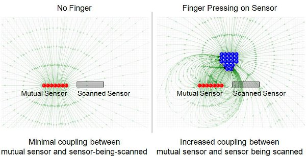

In some cases, you may wish to measure the amount of coupling between a driven pin and a capacitive sensor. Detecting ungrounded metal, for instance, is not always easily done with a normal CVD scan. The metal will not cause a large enough change in the capacitance of the sensor since it is floating.
Mutual drives can be used to look for an increase in the coupling between two traces. As that piece of floating metal (or a human finger, or...) comes near, the coupling between the two traces will increase. (The relative permativity between them is increasing.)
This allows for two different capacitive features to be measured at once:
-
The self capacitance of the sensor, determined by the relationship between the capacitance of the external sensor with the capacitance of the internal ADC hold capacitor.
- (Default mTouch Scan)
-
The coupling between the external sensor and the mutual drive.
- (Mutual Sensor Drive)
- Note:
- One mutual drive can be shared among all sensors. 
Mutual Field Lines with and without Increased Coupling
How It Works
When the CVD_MUTUAL_ENABLED option in mTouch_config_cvdAdvanced.h is used, the defined mutual pin is driven so that increased coupling (between the mutual drive and the sensor) will cause a shift in the same direction as adding capacitance to the sensor. Both the CVD scan and the mutual drive will be occuring at the same time. This means you are getting the benefit of both scans in one. As the distance between the object-to-be-detected and the sensor gets smaller, the impact of the mutual scan will increase. As the distance gets larger, the self-capacitance mTouch scan will provide a majority of the sensitivity.

Mutual driving during a normal mTouch scan
Mutual Sensor Configuration
- Open the mTouch_config_cvdAdvanced.h file and uncomment CVD_MUTUAL_ENABLED
- Set CVD_MUTUAL_LAT to the exact LAT or PORT bit for the mutual drive.
- Set CVD_MUTUAL_TRIS to the exact TRIS bit for the mutual drive.
Example
#define CVD_MUTUAL_ENABLED // <-- Enables a mutual drive during the mTouch scan //#define CVD_MUTUAL_EXCLUSIVE_ENABLED // <-- NOT defined! #define CVD_MUTUAL_LAT LATA3 // <-- The mutual sensor's LAT pin label #define CVD_MUTUAL_TRIS TRISA3 // <-- The mutual sensor's TRIS pin label
//#define CVD_MUTUAL_ENABLED // <-- NOT defined! #define CVD_MUTUAL_EXCLUSIVE_ENABLED // <-- Scanning ONLY with mutual coupling // and NO self-capacitance mTouch scan. #define CVD_MUTUAL_LAT LATC1 // <-- The mutual sensor's LAT pin label #define CVD_MUTUAL_TRIS TRISC1 // <-- The mutual sensor's TRIS pin label
Mutual Sensor Output
There is no change to the mTouch API when using a mutual drive sensor.